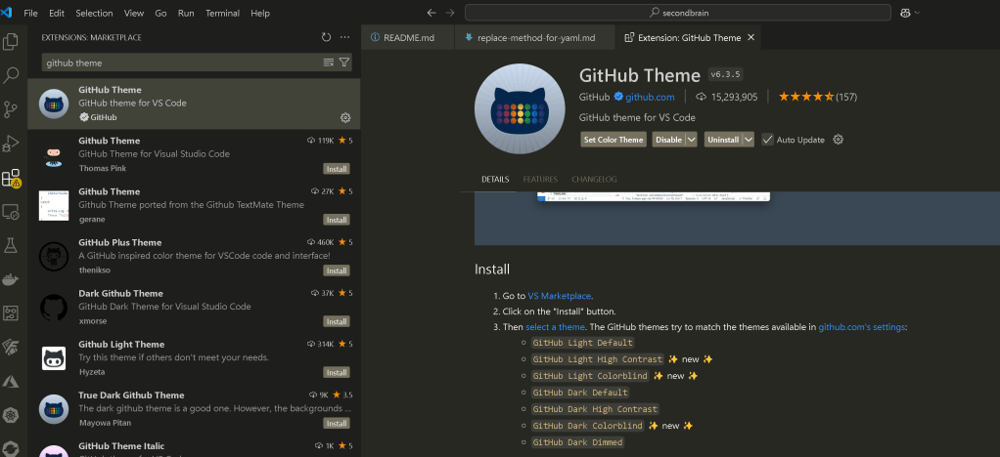
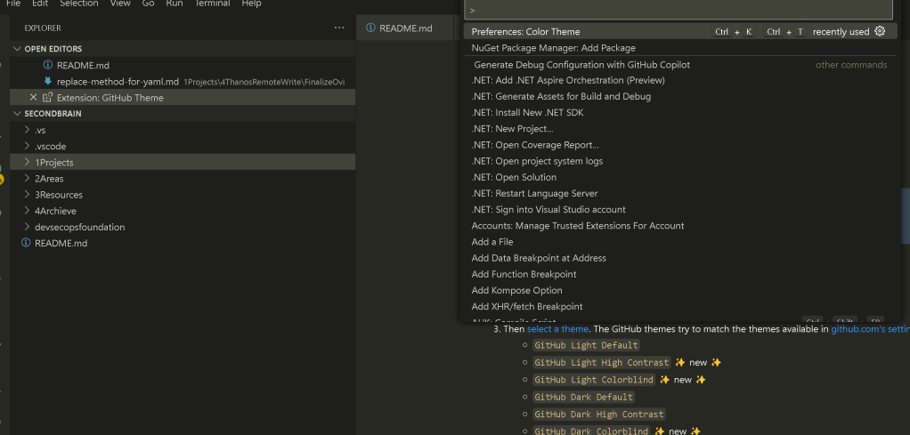

Bigger than sign to trigger extensions in VS Code


How to Use the "Bigger Than" Sign (>) to Trigger Extensions in VS Code
Visual Studio Code (VS Code) is one of the most popular and powerful code editors available today, offering an impressive suite of features to developers. One of the lesser-known but extremely useful features of VS Code is the ability to trigger extensions using specific commands. One such command is the "Bigger Than" sign (>), which can be used to invoke a variety of extensions or commands within the editor.
In this blog post, we'll explore how to use the > symbol to trigger extensions in VS Code and how it can enhance your workflow. Let's dive in!
What is the "Bigger Than" Sign in VS Code?
In VS Code, the > symbol is used in the Command Palette to search for and trigger commands and extensions. It acts as a shortcut that allows you to quickly access functionality within VS Code without needing to navigate through menus or key combinations.
The Command Palette is one of the most powerful features in VS Code, and by typing >, you can bring up a list of available commands and extensions that can be triggered directly from the command input.
How to Trigger Extensions with >
- Open the Command Palette
To start using the>symbol, you need to open the Command Palette. You can do this by:
Pressing Ctrl + Shift + P (Windows/Linux) or Cmd + Shift + P (macOS).
-
Alternatively, you can access it via the menu: View > Command Palette.
-
Type the
>Symbol
Once the Command Palette is open, type the>symbol. This will indicate that you're searching for commands or extensions that can be triggered using this symbol. -
Search for a Command or Extension
After typing>, you can start typing the name of the command or extension you'd like to trigger. For example:
Type >Git to see Git-related commands like Git: Clone, Git: Pull, and Git: Commit.
-
Type
>Pythonto see Python-related extensions and commands likePython: Select InterpreterorPython: Run Python File. -
Execute the Command
Once you've found the desired extension or command in the list, simply press Enter to execute it.
Examples of Useful Extensions Triggered by >
Here are a few examples of how you can use the > symbol to trigger extensions in VS Code:
-
Prettier: Format your code with the Prettier extension. Simply type
>Format Documentto apply Prettier formatting rules to your code. -
Bracket Pair Colorizer: Quickly navigate between matching brackets. Type
>Bracket Pair Colorizer: Toggleto enable or disable the colour matching for brackets. -
Live Server: Start a local development server with Live Server. Just type
>Live Server: Open with Live Serverto launch the live preview of your project in a browser.
Why Should You Use > to Trigger Extensions?
Using > to trigger extensions offers several advantages for developers:
-
Speed: It’s a fast way to access commands without needing to remember complex keybindings or search through menus.
-
Flexibility: You can quickly toggle features on or off, such as enabling linters or formatters, without navigating to the settings.
-
Discovery: It’s a great way to discover new commands or extensions that you might not have used yet, opening up new possibilities in your workflow.
Customising Your > Experience
If you're a heavy user of the Command Palette, you can even configure custom commands or bind specific extensions to your preferred keys. This is a great way to streamline your workflow further.
-
Open Keybindings: You can modify or add keybindings for commands triggered by the
>symbol by going to File > Preferences > Keyboard Shortcuts (or pressingCtrl + K, Ctrl + Son Windows/Linux andCmd + K, Cmd + Son macOS). -
Search for Commands: In the search bar, look for the specific command you’d like to customise, and assign a new keybinding if you prefer quicker access.
Conclusion
The > symbol in VS Code is a powerful yet often underutilised feature that can greatly speed up your development process. By using the Command Palette to trigger extensions, you gain quick access to various tools and commands, streamlining your workflow. Whether you're working with version control, formatting code, or managing your development environment, using > can help you be more efficient and productive in VS Code.
Next time you're working in VS Code, remember the power of the > symbol and how it can help you unlock even more from your extensions and commands. Happy coding!
Imported from rifaterdemsahin.com · 2025